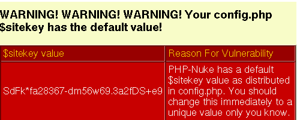
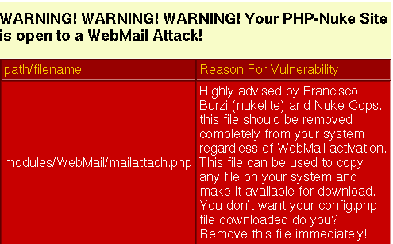

23.4. How to guard against security vulnerabilities in PHP-Nuke
After all the detailed excusion to the security risks lurking around your pristine installation of PHP-Nuke that was undertaken in the previous sections, you may be asking yourself if there is anything you can do to avoid them. Indeed, following the advice in this section, will render your PHP-Nuke system as secure as can be.
But there is also one point you should understand while talking about software (and especially Web software) security: there is no absolute security! You can make life very difficult for the hypothetical “malicious user”, but then, given enough (time, money and criminal energy) resources, every system connected to the Web can become vulnerable. Thus, if your carreer depends on this, hire a security professional to check the code for you.
However, even if you are on your own, you can still do a lot to guard against security vulnerabilities. You can:
Stay current on developments and apply security fixes (see Section 23.4.1).
Take the right security measures (see Section 23.4.2).
Perform a security audit of the code yourself (see Section 23.4.3).
Check file permissions (see Section 23.4.4) and cookie settings (see Section 23.4.5).
 | Disable HTML and uploads! |
|---|---|
Many of the most important security risks arise from the fact that HTML is allowed in the News and Forums, or that users are allowed to upload avatars or mail attachments to the web server. You can thus diminish the attack potential against your site, if you disable HTML and uploads. But of course, this will not protect you from everything, so read on!
|
23.4.1. Security fixes
No piece of software is free from security related bugs. PHP-Nuke is no exception to this rule. Due to its open source nature, everyone can search the source code for security holes. This is done by professionals and amateurs alike. When a security hole is found (i.e. a bug in the code that has the potential to enable unauthorized access and/or execution of code, leading to a compromise of the system's integrity or function), a bug fix will appear that closes it. It is of utmost importance to the integrity of your data to follow the developement in this area and apply those “security fixes” as soon as they become available.
If you run a fresh version of the analyze.php script (see Section 3.9.1.3), it will not only test your database connection and report errors, it will also warn you of any vulnerabilities regarding your PHP version (see Figure 23-1).
| Run a fresh analyze.php regularly |
|---|---|
analyze.php will also test other components of your system, such as MySQL, various modules etc. for known vulnerabilities, so you should run a fresh copy at regular intervalls (an old copy will not report new vulnerabilities, of course!). But it is also important that you do not rely completely on one script. There is no way around subscribing to the security mailing lists, if you want to stay current on developments in the software security field. |
You should register yourself to well-known security advisories, like those from secunia, securityfocus, CERT, http://neworder.box.sk or linuxsecurity and filter those that are relevant to PHP and PHP-Nuke (unless you plan to read emails all day!).
Upon reading about a new vulnerability for PHP-Nuke, you should reach the pages of
looking for available security fixes to apply. For example, nukeresources collects all (security or not) fixes to the 6.x version of PHP-Nuke under Downloads Category: PHPNuke 6.x / Fixes.
If a new PHP vulnerability has been discovered, then the first place to run to, is php.net.
23.4.2. Security measures
Figure 23-2. Site key security warning from analyze.php.

Site key security warning from analyze.php.
Staying current on security fixes is only part of the story. The other part is a conservatively configured system. Regarding security, you cannot be overly conservative, so consider taking the following general security measures:
Apply any security fixes available for your PHP-Nuke version (see Section 23.4.1).
Do not allow HTML in the news, forums, private messages or any other areas of PHP-Nuke. Use BBcode instead.
Do not allow uploading of images (e.g. for a gallery), avatars (e.g. for a forum) or mail attachments, in any module, be it a forum, gallery, mail or whatever.
As long as the mailattach.php file is on the server, even if the module is not active, you can get hacked. Currently, the best fix is to delete the file (see mailattach). analyze.php (see Section 3.9.1.3) will issue a waring, if it finds the file in your installation (see Figure 23-3).
Delete the nuke.sql file from your web server, as soon as you finished installation and everything is working correctly. First, you will not need it any more and second, if someone takes control of your site, he could have the nice idea to rerun the nuke.sql file on your database, thus bringing it to its original, pristine state (see Hacked - now what? for a real story).
You should also change your site key. The best time to do this is during installation, while entering all the other parameters in config.php. analyze.php will issue a warning, if it finds the default site key in your config.php (see Figure 23-2). A site key is an important but often overlooked security feature of PHP-Nuke. It is used in generating security codes for authentication and resource access (e.g. downloads) purposes (see PHP-Nuke Security GFX Mapping - Potential Risk for details on how this is done). Each installation of PHP-Nuke system requires choosing a unique site key.
You can use the Electric Dice for this purpose. ElectricDice generates true random site keys that can be easily pasted into the config.php file. As opposed to pseudo random numbers generated by computers, Electric Dice uses numbers generated from atmospheric noise in radio waves - a proven entropy source. ElectricDice is useful for both first time installation as well as updating your existing site key.
Figure 23-3. WebMail security warning from analyze.php.

WebMail security warning from analyze.php.
To reduce the risk of SQL injection (see Section 23.3.2) and cross-site scripting (see Section 23.3.1), you can do the following:
Set “magic_quotes” to ON in php.ini. When magic_quotes are on, all ' (single-quote), " (double quote), \ (backslash) and NUL's are escaped with a backslash automatically, see PHP Options and Information.
Set “register_globals” to OFF in php.ini. When on, register_globals will inject (poison) your scripts will all sorts of variables, like request variables from html forms. This coupled with the fact that PHP doesn't require variable initialization means writing insecure code is that much easier (see Using Register Globals).
Follow a well-thought user rights concept. Do not give users more rights to the database than it is absolutely necessary.
 | PHP-Nuke now works with register_globals set to OFF! | |
|---|---|---|
Contrary to the older 5.x versions that needed some extra script for this, newer versions (starting 6.0) of PHP-Nuke will work with register_globals set to OFF in the php.ini! Thus, there is no need to renounce this security measure, as far as PHP-Nuke is concerned. The reason is the following code that is now included in the start of mainfile.php:
Since every module includes mainfile.php, it also includes the above code, and will thus work with register_globals OFF. If, for some unusual reason, your module does not include mainfile.php, just add the above lines of code to make it work with register_globals OFF. |
To avoid path disclosure (see Section 23.3.3), you can:
Set "display_errors" to off in php.ini or
php_flag display_errors off
in .htaccess (see Section 25.4) or in an http configuration file.
Use PHP's error handling functions to disable error reporting or alter the handling (to email an admin for example, and display a less explicit error).
| Security Tip (from the PHP-Nuke INSTALL file) | |
|---|---|---|
It's a good choice to put your config.php file outside the Web Server path, then you can create a new config.php with the line:
|
Some of the above measures may make PHP-Nuke less attractive to you, or your visitors, who would very much like, for example, to be able to write in HTML, upload images at will, or attach nice files to their mails. It is up to you to weigh the risks and the merits of allowing or disabling a functionality. A small, amateur site may take a different approach than a big, professional one.
And remember that the most secure website is one that is offline. 
23.4.3. Security audit
Unfortunately, the above measures will not be enough to protect you, if the code is flawed. Thus, the most effective measure, is the one that needs a programmer and a security specialist together:
If you are a programmer, or if you hire one: inspect (audit) the code and “sanitize” the data, whenever it is input by the user. Sanitization is best achieved through a default-deny regular expression, like [^a-zA-Z0-9] - whatever matches the expression should be removed. The regular expression acts like a filter on user input. Make that filter as narrow as possible: if at all possible, allow only numbers, else letters and numbers. Make sure that any other characters, like symbols or punctuation, are converted to their HTML entity equivalents. Further, prefix and append a quote to all user input. For more programming tips, see Advanced SQL Injection In SQL Server Applications and Web Applications and SQL Injection.
If you rather prefer an explicit list of what to block, try this one, taken from SQL Injection Walkthrough:
Filter out characters like single quote, double quote, slash, backslash, semicolon, extended characters like NULL, carriage return, newline, etc, in all strings from:
Input from users
Parameters from URLs
Values from cookies
For a numeric value, convert it to an integer before parsing it into an SQL statement.
Currently, PHP-Nuke checks with the following code for the presence of “bad code” in GET parameters:
foreach ($_GET as $secvalue) {
if ((eregi("<[^>]*script*\"?[^>]*>", $secvalue)) ||
(eregi("<[^>]*object*\"?[^>]*>", $secvalue)) ||
(eregi("<[^>]*iframe*\"?[^>]*>", $secvalue)) ||
(eregi("<[^>]*applet*\"?[^>]*>", $secvalue)) ||
(eregi("<[^>]*meta*\"?[^>]*>", $secvalue)) ||
(eregi("<[^>]*style*\"?[^>]*>", $secvalue)) ||
(eregi("<[^>]*form*\"?[^>]*>", $secvalue)) ||
(eregi("<[^>]*img*\"?[^>]*>", $secvalue)) ||
(eregi("\([^>]*\"?[^)]*\)", $secvalue)) ||
(eregi("\"", $secvalue))) {
die ("I don't like you...");
}
} |
Notice that the expressions in the first argument of the eregi functions above are regular expressions (see Section 25.3). Their meaning is the following:
For the sake of example, we explain the first regular expression
<[^>]*script*\"?[^>]*> |
meaning "anything that starts with "<" (that's the first "<" in the expression), immediately followed by zero or more occurrences (that's the "*" after the [^>]) of a character that is NOT (that's the "^" inside the "[^>]") ">" (that's what follows the "^" in the square brackets), immediately followed by "script", followed by zero or more occurrences of "t" (that's the "*" after "script", but it is wrong here, you probably should have a blank between "script" and "*", meaning zero or more blanks....but let's continue ), immediately followed by zero or one """ (that's the ""?" - don't let the double quotes mislead you, what we mean is "zero or one double quote" ), immediately followed by zero or more occurrences of any character that is not ">" (that's the "[^>]*" again...)". Phew...
As it stands, an expression like that will match everything that contains “< scriptxxxxxxxxx”, where the x's stay for “whatever”. This may be too restrictive for you, as you might want to allow words that contain “script” as part of the word, but not the word “script” itself. Try the following regular expression instead:
<[^>]*script +\"?[^>]*> |
Uhmm...what's the difference? We have inserted a blank between "script" and the "*" immediately following it and have replaced the "*" with the "+". Thus, the "+" will refer to the preceding blank (meaning "one or more blanks", not "zero or more t's", as in the case of the original "script*"). Remember, the "*" and the "+" and the "?" all refer to the preceding "atom" - it is NOT like "dir *.exe" here!
Small, but crucial! 
Further, go to modules/Forums/admin/common.php and have a look at the start of the code. There you can see how to use addslashes to "escape" potentially dangerous characters (like quotes). Since we are dealing only with GET parameters in this discussion, you need only the part that is relevant to the $HTTP_GET_VARS array:
//
// addslashes to vars if magic_quotes_gpc is off
// this is a security precaution to prevent someone
// trying to break out of a SQL statement.
//
if( !get_magic_quotes_gpc() )
{
if( is_array($HTTP_GET_VARS) )
{
while( list($k, $v) = each($HTTP_GET_VARS) )
{
if( is_array($HTTP_GET_VARS[$k]) )
{
while( list($k2, $v2) = each($HTTP_GET_VARS[$k]) )
{
$HTTP_GET_VARS[$k][$k2] = addslashes($v2);
}
@reset($HTTP_GET_VARS[$k]);
}
else
{
$HTTP_GET_VARS[$k] = addslashes($v);
}
}
@reset($HTTP_GET_VARS);
}
} |
Chatserv has recently undergone PHP-Nuke a detailed scrutiny from the security point of view and came up with security patches for all 6.x and 7.x versions of PHP-Nuke that cover:
New Abstraction layer conversion.
Variables quoted on all sql queries.
Security check added to most variables.
Bugs in core files fixed.
Previous sec-fix patches applied.
You should include Chatserv's patches in your security audit and try to stay current on the developments in this area as much as you can.
23.4.4. Permissions on folders and files
This section is of importance only to those who use PHP-Nuke under Linux/Unix (this is true for the greater part of PHP-Nuke sites that are hosted by providers, and often also those who test locally use Linux).
You have already set the right permissions on folders and files during installation (see Section 3.2.3, where you will find a more in-depth treatment of the concept of file permissions). However, it is a good idea to think about permissions once again, in a security context.
Burzi says that the directories should be assigned a mode of 777, the files a mode of 666, but we may calmly let our PHP-Nuke do its work under more restrictive permissions, as illustrated below:
config.php (666)
backend.php (666)
ultramode.txt (666)
All directories (755)
Other files (644)
The files config.php, backend.php, ultramode.txt must have the write permissions because :
For config.php editing the preferences we will write this file modifying the text.
For the backend and ultramode on the other side, we will write them (in an automatic way) modifying the titles and abstracts of the news.
There is however something particular we have to take into account: if we use modules that upload files in some directories, their permissions wil have to be raised. As an example, consider the IndyNews module, a non standard module that makes it possible to enclose files and images in articles. The structure of the module is the following:
modules/indynews/media
In the inside of the “indynews” folder the permissions of the folder “media” would have to be 777, due to an override problem, the 777 permissions will have to be imposed on everything that is below “modules”. For this reason, everything that resides in “modules” will be in 777 mode and this could cause a vulnerability. A solution is to move the folder that will have to accommodate the uploaded files to the outside of the modules folder, even to the document root, changing inside the module all the references to it.
Doing so will leave one single folder in root with permissions set to 777. But you still have to consider the risks associated with such a decision. To quote the phpGroupWare Installation and security HOWTO:
As discussed earlier, having a world writable file in you web root is a rather serious security risk, especially if that file will accept raw user data. It becomes trivial for someone to add php code or any type of script or cgi code your server supports and execute it on your system. Risk is reduced slightly because it would be executed as the "anonymous" nobody user that apache runs under but still would allow access to your ...[ed. config.php] and thus your database, as well as access to /etc/* where all sorts of fun and dangerous information could be abused.
Thus, if the upload feature is of utmost importance to you, you are well advised to double-check what kinds of files your users will be allowed to upload - and test any paranoid scenario you can think of. In case of doudt, it may be safer to disable uploading at the cost of making some users unhappy. Better safe than sory.
23.4.5. Cookies - timeout and configuration
PHP-Nuke makes heavy use of cookies, be it for user authentication, or admin authentication. The cookies are text files that are saved on our computers and contain various information that is read when we enter a certain site. In the case of PHP-Nuke the information saved there pertains to the user, the chosen theme and the language used.
The cookie is also the instrument that enables us not to have to retype the password each time we log in. This way, each time we access a PHP-Nuke site, the cookie works for us by managing the login operation.
23.4.5.1. Cookie hijack
The problem is that if the cookie does not have an expiry date low enough, someone can to steal it from us and be able to access the site as a user or administrator. This is possible for a series of reasons:
The cookie of PHP-Nuke has a life duration close to infinite (31536000 seconds)
Explorer (most used browser, unfortunately) has vulnerabilities that allow the execution of malicious scripts on the client that “steal” the cookie from the user and send it to the “burglar”.
PHP-Nuke does not succeed in filtering all the malicious scripts (or, to put it better, Internet Explorer is so stupid that corrects inserted scripts with the wrong syntax in order not to be recognized).
Let's show a concrete example of how a script kiddie (those who hold themselves for hackers, but they are not...) can try to obtain administrator rights on our site:
The script kiddie inserts a script that supposedly contains news:
< vb script give the cookie to me and send it to the server xyz>
that is not filtered by the function check_words() of PHP-Nuke.
The administrator of PHP-Nuke opens the page up with Internet Explorer!!! (This hack does not work if you're using Mozilla, or better yet, any Linux browser). The list of the news waiting to be approved for publishing is seen by the administrator. When he goes to look at the Submissions, Internet Explorer (stupidly) corrects the vbscript in this way:
<vbscript>(script kiddies commands go here)
succeeding to interpret the wrong syntax in the correct way (!!!), taking the cookie and sending it to the script kiddie.
The script kiddie puts the cookie among the other ones of his own, connects to the site and... is recognized as being the administartor!!!
But how is it possible to protect ourselves from this type of hack?
There are some solutions that should increase the security for our administration area:
First of all STOP using Internet Explorer as a browser and pass the seat to Mozilla. Mozilla is a browser that supports all sites in an optimal way and is not plagued by all the vulnerabilities of Microsoft. If you use Linux instead you won't encounter any problems of this sort...
In case you want to continue to use the Explorer, you should at least download the patches from Microsoft.
Disable, where possible, the insertion of HTML tags (for example in the forum)
Narrow down the life of cookies. If for example we set up the life of the cookie to two hours, the script kiddie will be forced to use the cookie within that period, this limits much of their ability to act in time.
If instead we leave the life of the cookie to its preset value, the script kiddie may use our cookie even for 1 month after it was stolen.
How to set up the duration of the administartor cookie? The cookie is set up in the file includes/auth.php and the function to modify it is the following:
if ((isset($aid)) && (isset($pwd)) && ($op == "login")) { if($aid! = "" AND $pwd!="") { $pwd = md5($pwd); $result=sql_query("select pwd, admlanguage from "$prefix."_authors where aid='$aid'", $dbi); list($pass, $admlanguage)=sql_fetch_row($result, $dbi); if($pass == $pwd) { $admin = base64_encode("$aid:$pwd:$admlanguage"); setcookie("admin", "$admin",time()+7200); unset($op); } } }As you see we have modified the life duration of the second cookie from 2592000 (a month) to 7200 seconds (two hours). As you can easily see, we have reduced the action radius of the script kiddie down from one month to two hours.
A much more effective tag filter is realized through the check_html and filter_text functions in mainfile.php (see Section 16.1). The admissible tags are defined in the file config.php in the $AllowableHTML array, these are valid for the comments, the insertion of news and many other user inputs (see Table 16-1 and Table 16-2 for all instances of a call to the filter_text and check_html functions respectively).
All these actions and a correct configuration of the permissions as illustrated in Section 3.2.3 and Section 23.4.4, should guarantee us a good security for our site. It is also important to closely follow the security warnings for PHP-Nuke that are brought up on the various security advisories (see Section 23.4.1).
23.4.5.2. Changing the duration of the user cookie
If you want to redefine the duration of the user cookie (as opposed to the administrator cookie), you have to edit the file modules/Your_Account/index.php. There, find the function docookie():
function docookie($setuid, $setusername, $setpass, $setstorynum, $setumode,
$setuorder, $setthold, $setnoscore, $setublockon, $settheme, $setcommentmax) {
$info = base64_encode("$setuid:$setusername:$setpass:$setstorynum:$setumode:
$setuorder:$setthold:$setnoscore:$setublockon:$settheme:$setcommentmax");
setcookie("user","$info",time()+2592000);
} |
and change the 2592000 seconds (30 days) to the duration of your choice.
If you want the user cookie to expire as soon as the user closes his browser, to avoid problems with internet cafes and similar situations where a user might forget to log off your site and leave his browser still running, thus making it trivial for others to use his PHP-Nuke account, you should set a temporary cookie. This is done by removing the time altogether:
setcookie("user","$info"); |
See:
for discussions on this subject.